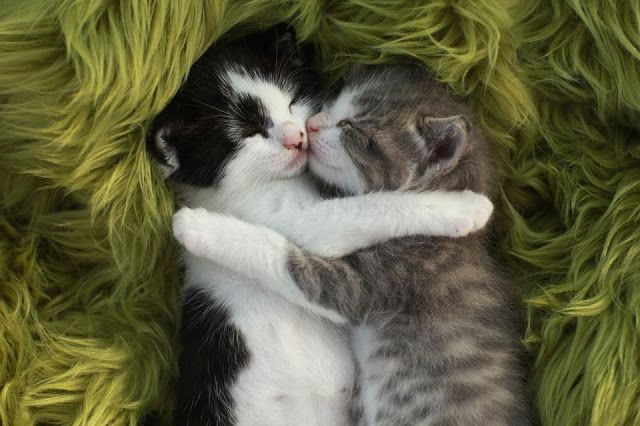

انتخاب اسم برای گربه یه مسئولیت بزرگ و مهم برای صاحب گربه است. اسمی که برای گربه ملوسمون میذاریم باید زیبا و خوش آوا باشه و مناسب ظاهر و شخصیت گربهمون باشه. در این مقاله قصد داریم در انتخاب بهترین اسم برای گربه بهتون کمک کنیم و با پیشنهاد بیش از ۱۵۰ اسم بامزه، خاص و شیک بهتون بگیم که براساس چه فاکتورهایی میتونید بهترین اسم رو انتخاب کنید. پس در ادامه با ما در پت پرس همراه باشید.

چرا انتخاب اسم برای گربه مهمه؟
گربه کوچولویی که وارد خونه ما میشه دیگه یکی از اعضای خانواده است و باید اسمی زیبا و مناسب داشته باشه.
اسمی که برای گربه کوچولومون انتخاب میکنیم برای همه عمر باهاش میمونه (حدود ۱۵ سال)، پس خیلی مهمه که اسمی برای گربه بذاریم که هم مناسب بچگیهاش باشه و هم مناسب بزرگسالیش.
گربه به مرور اسمش رو میشناسه و میدونه که شما با اون اسم صداش میکنین. انتخاب اسم برای گربه باعث تقویت رابطه عاطفی و احساسی شما با گربهتون میشه.
بهترین اسم برای گربه اسمیه که خوش آوا و زیبا باشه و کاملا به ظاهر و رفتار و شخصیت گربهمون بیاد.
به همین دلیل پیشنهاد میکنیم اجازه بدید اول گربه وارد خونهتون بشه و بعد از یه مدت که با اخلاق و رفتارش بیشتر آشنا شدید متناسب با اون براش یه اسم زیبا و خاص انتخاب کنید.
اسم گربه رو به همراه آدرس یا شماره تماس خودتون میتونید روی پلاک حک کنید و به قلاده گربه وصل کنید. اینطوری اگه خدای نکرده گربهتون گم شد کسی که پیداش میکنه میتونه با صدا کردن اسمش گربه رو آروم کنه و سریع با شما تماس بگیره.

چطوری گربه رو صدا کنیم که جواب بده؟
ویدیوی زیر رو ببیین تا علاوه بر اینکه با چنتا اسم خوشگل گربه آشنا میشین و هم اینکه یاد میگیرین که چطوری بهش اسمشو آموزش بدین.
انتخاب اسم براساس ظاهر گربه
یکی از مهمترین مواردی که تو انتخاب اسم برای گربه تاثیرگذاره ظاهر و قیافه گربهمونه. به گربهتون نگاه کنید و ببینید در نگاه اول کدوم ویژگی گربه بیشتر به چشمتون میاد.
هر گربهای حداقل یه ویژگی خاص تو ظاهرش داره:
- رنگ موهای گربه (حنائی، سفید، سیاه، دو رنگ و …)
- رنگ چشمها
- موکوتاه یا موبلند بودن
- ظریف و لاغر یا گرد و تپلی
اسم برای گربه سیاه یا دودی
- بلکی | Blacky
- اسموکی | Smockey
- اَشلی | Ashley
- سایه
- دوده
- دودی
- سرمه
- نیلی
اسامی پیشنهادی برای گربه حنائی و نارنجی
- جینجر | Ginger
- گارفیلد| Garfield
- پینات | Peanut
- سان شاین | Sunshine
- گلدی | Goldie
- کدو
- فانتا
- تافی
- مارمالاد
- طلا
- حنا
- زردک
- زردآلو

اسم برای گربه سفید
- پنبه
- برفی
- سپید
- پشمک
- وانیل
- مارشمالو | marshmallow
- آیس (Ice)
- میلکی (Milky)
- اِسنو (snow)
- اِلسا
اسم برای گربه کرم و نسکافهای
- کاپوچینو
- کارامل
- تافی
- دارچین
- پاستل

انتخاب اسم گربه براساس شخصیت و رفتار
خلق و خو و شخصیت گربه هم معیار خوبی برای انتخاب اسمه. به همین دلیله که میگیم اول بذارید گربه خونهتون بیاد و چند روزی یا حتی چند هفتهای بگذره بعد واسش اسم انتخاب کنید.
گربهتون چه نوع شخصیتی داره؟ خیلی آرومه؟ شیطون و بازیگوشه؟ خرابکاره؟ حسوده؟ بغلی و خرخرو و لوسه؟ خلاصه براساس ویژگیهای اخلاقی کلی اسم باحال و بامسما میشه پیدا کرد که کاملا هم به گربهمون بیاد. مثلا برای گربههای آروم و زیبا مثل گربه پرشین کت میتونید از اسامی زیر استفاده کنید.
اسامی پیشنهادی گربه ماده آروم
- لوسی| Lucy
- لیدی | Lady
- پرنسس| Princess
- بِلا (به معنی زیبا) | Bella
- خانومی
اسامی پشنهادی گربه نر باوقار
- پرنس | Prince
- لرد| Lord
- کینگ| King
- زئوس| Zeus
- تایگر| Tiger
- شازده
اسم گربه شیطون و بازیگوش
- کیت کت
- فسقلی
- وروجک
- تامی
- بَلا
- هایپر
- زبل
اسم گربه بامزه و ناز
- کیوتی
- آبنبات
- ناگت
- فلافی
- کوکو
- چیکو
- مومو
- نبات

انتخاب اسم گربه براساس اسم آدمهای معروف (خواننده، بازیگر، …)
یه وقتایی هم شخصیت محبوبتون تو یه کارتون، فیلم یا حتی کتاب داستان رو میتونید روی گربهتون بذارید. حتی این شخصیت معروف دلیلی نداره که حتما یه گربه باشه!
مثلا اگه طرفدار سریال بیگ بنگ تئوری باشید میتونید اسم گربهتون رو شلدون یا پِنی بذارید!
یا تو چند سال گذشته که سریال بازی تاج و تخت (game of thrones) در حال پخش بود اسمهایی مثل سرسی، دنریس، کلیسی، جیمی و حتی جان اسنو به اسمهایی محبوبی برای گربه و سایر پتها تبدیل شده بود!
همینطور خیلیها اسم بازیگر، خواننده یا شخصیت معروف مورد علاقهشون رو روی گربهشون هم میذارن، چرا که نه؟!
مثلا اگه به بازیگر معروف زن، کیت وینسلت علاقه دارید میتونید اسم گربه مادهتون رو کیت بذارید یا اگه لئوناردو دی کاپریو بازیگر مورد علاقهتونه اسم گربه نرتون رو لئو بذارید!

انتخاب اسم گربه براساس شخصیت گربه معروف کارتونی، فیلم یا کتاب
علاوه بر این، تو خیلی از کارتونها و فیلمها، گربههای مشهوری بودن که میتونید براساس اون اسم برای گربه عزیزتون انتخاب کنید.
بعضی از این اسم ها عبارتند از:
- گارفیلد
- سیمبا و نالا (در انمیشن شیرشاه)
- تام (تام و جری)
- کیتی (هلو کیتی)
- خپل (انیمیشن قدیمی خپل و باغ گلها)
- مخمل (در خونه مادربزرگه)
- فلیکس (felix the cat)
- سیمون (انیمیشن گربه سیمون)

انتخاب اسم گربه براساس نام حیوان خانگی قبلی
اگه حیوون خونگی دیگهای هم تو خونه دارید میتونید اسم گربه جدیدتون رو براساس اسم حیوون قبلیتون بذارید. مثلا اگه اسم سگ یا گربه قبلیتون با حرف «ک» شروع میشه میتونید اسمهایی مثل کیتی، کایلی، کیانا، کایلا، کوین رو انتخاب کنید.
البته حواستون باشه که اسم حیوانات خانگیتون نباید خیلی شبیه به هم باشن و تلفظ مشابهای داشته باشن؛ چون در این صورت ممکنه باعث گیج شدن خودتون و گربههاتون بشه.
مثلا دو اسم لونا و لولا خیلی تلفظشون شبیه به همه و انتخاب خوبی برای دو گربه تو یه خونه نیست.
اما اگه یه گربه پشمالو و موبلند به اسم پشمک تو خونه دارید و گربه جدیدتون هم موبلند و سفیده میتونید اسم یخمک روش بذارید.
اگه دوست دارید علاوه بر گربه یه سگ هم داشته باشید برای انتخاب اسمش پیشنهاد میکنیم مقاله اسامی پیشنهادی برای سگ رو بخونید.

اسم کوتاه برای گربهتون انتخاب کنید!
اسمهای کوتاه و ترجیحا یک یا دو هجایی بهترین انتخابها به عنوان اسم گربه هستن؛ چون هم تلفظ و صدا کردنش برای شما راحته و هم گربهتون سریع آوای اسم رو یاد میگیره و اسمش رو میشناسه.
گربهها به سرعت سگها اسمشون رو یاد نمیگیرن و به اسمشون واکنش نشون نمیدن. اما اگه اسم کوتاهی براش انتخاب کنید و مدام با همون اسم صداش کنید به احتمال بیشتری اسمشون رو یاد میگیرن و هروقت صداشون کنید پیشتون میان.
البته خیلی از صاحبان گربه اسامی طولانی مثل مکسیمیلیان روی گربهشون میذارن و بعد اسم رو کوتاه شده و به صورت مکس صدا میکنن. پس چه بهتر که از همون اول اسمی انتخاب کنیم که کوتاه، خوش آوا و زیبا باشه.

اسمی انتخاب کنید که برای گربه بزرگسال هم مناسب باشه!
درسته که گربهها کلا موجوداتی بامزه و فانتزی هستن و اسمی که براشون میذاریم هم میتونه خیلی بامزه باشه؛ اما به هرحال باید این اسم وقتی گربه بزرگ شد هم مناسبش باشه.
مثلا ممکنه اسم بچه گربه نازتون رو به خاطر قیافه بانمک و جثه ریزش «جوجو» یا «نی نی» بذارید و بعد وقتی گربهتون بزرگ شد به گربهای چاق با جثهای بزرگ تبدیل بشه که اسم جوجو براش مسخره و نامناسب باشه!
پس موقع انتخاب اسم برای بچه گربه به این نکته دقت کنید و اسمی براش انتخاب کنید که بتونه باهاش بزرگ بشه و به اسمش بتونه افتخار کنه!

سایر اسامی پیشنهادی برای گربه
علاوه بر تمام اسمهایی که در بالا گفتیم باز هم کلی اسم بامزه و زیبا هست که میتونید برای گربهتون انتخاب کنید. اگه تا اینجای مقاله هنوز اسم مورد علاقهتون رو پیدا نکردید حتما یکی از اسامی زیر رو انتخاب خواهید کرد:
- لئو | Leo
- میلو |Milo
- الکس |Alex
- تامی |Tommy
- کوکو |Coco
- لاکی |Lucky
- ناگت |Nugget
- فلافی |Fluffy
- تدی |Teddy
- چیکو |Chico
- داستی |Dusty
- مومو |Momo
- پپر |Pepper
- کیت کت| Kit Kat
- لولا|Lula
- لونا |Luna
- میلا |Mila
- لیلی | Lili
- دیزی |Daisy
- مایا |Maya
- الی |Elli
- کیکی |Kiki
- چیلی |Chilli
- پاپریکا |Paprika
- سیلور |Silver
- شیبا | Shiba
- دیوا | Diva
- هرا | Hera
- چیتا | Cheetah
اسم ایرانی خاص برای گربه ماده
- آوا
- نقره
- ایران
- دلبر
- زیبا
- آذر
- آبان
- باران
- دریا

اسم ایرانی بامزه برای گربه ماده و نر
- نخودی
- لپه
- پفک
- فندق
- گردو
- سنجد
- قندک
- فلفل
- ملوس
- پیشولک
- یخمک
- ببری
- پلنگی
- بامشی (به معنی گربه در گویش مازنی)
- پیشیک (به معنی گربه در زبان آذری)
نظر شما چیه؟
کدوم اسم به نظرتون از همه قشنگتر بود؟ اگه گربه دارید اسم گربه ملوستون چیه؟ به نظرتون چه فاکتورهای دیگهای رو باید در انتخاب اسم برای گربه در نظر گرفت؟ اگه اسم پیشنهادی دیگهای دارید که برای بچه گربه یا گربه بزرگسال مناسبه حتما برامون کامنت بذارید.
خیلی عالی بود
سلام ممنون از مقاله ی خیلی خیلی خوبتون من تصمیم دارم یه گربه هیمالین به سرپرستی بگیرم و تصمیم گرفتم اسمش رو کاپوچینو بذارم😍
سلام
مطالب مفید برام بود ما دو تا گربه به رنگ سیاه و سفید و خاکستری داریم گربه سیاه و سفید خیلی بازیگوش هست و گربه خاکستری آروم هستش میخواستم بدونم اسمش را چی بگذارم هر چی فکر میکنم نمیدونم چی اسمشون بگذارم اگر کمک کنید ممنون میشم.
سلام من یک گربه دارم که نارنجی رنگ است یکم پرشین ماننده واسمش جیمیه و خیلی خوب به اسمش عادت کرده
سلام زهره جان
اسم خیلی زیباییه
ممنونم❤️
سلام
من یه پیشی خاکستری شیطون دارم
اسمشو گزاشتم سیلَم
سیلَم اسم گربه سابرینا توی انیمیشن سابریناعه
خییلی نازه بنظرم اگه دیده باشین انیمیشنشو عاشقش میشین و از این اسم خوشتون میاد
من که عاشق گربمو اسمشم🙃خیلی بهش میاد🥰
ببخشید برای گربه سیامی ماده اسمِ جولیا مناسب هست یا نه ممنون میشم جواب بدین
سلام زینب جان
اسم ها بجز مناسب بودن برای جنسیتش محدودیت دیگه ای ندارن. اگر واکنش خوبی به این اسم داره میتونی ازش استفاده کنی
سلام یه سوال داشتم اسم شوگر به معنی شکر بهتره یا لومیل به معنی نور ؟ البته برای گربه پرشین سفید ؟
سلا پرنیان جان
انتخاب اسم یه بخشیش سلیقه ایه یه بخشیش باید ببینی چی به پت میاد و بخش دیگش هم واکنش اون حیوون به این اسمه
به نظر من شوگر .
من۴تا گل پسر دارم به اسم های پنبه پشمک مخمل و لوسی.پنبه وپشمک برادرن و ۴سال ونیم سنشونه واز اول اسم شون روفهمیدن.۶ماه بعد مخمل کوچولو رو پیدا کردیم و شد پسر سوم ما والان ۴سالشه.و۴ماه پیش لوسی رو پیدا کردیم و شدپسرتتقاری ما.هر۴تاشون اسماشون رو بلدن و موقع غذا خوردن صداشون میکنم میان.خلاصه که این ۴تاگل پسرهمه چیزمنن❤
سلام مینا جان،
ممنون که تجربتون رو با ما به اشتراک گذاشتین.
سلام ببخشید دوتا گربه از بچگی روی حیاط خونه ما به دنیا اومدن الان یک سال و نیم دارند میخواهیم جابه جا بشیم نمی دونم چکار کنیم جایی هست بسپاریم برای واگذاری و یا اگه رها بشن از پس خودشون بر میان
سلام زهرا جان،
اگه از حیاط خونه به بیرون هم رفت و آمد داشتن و همیشه شما غذاشونو نمیدادن، یعنی درواقع تا حدی اگه به زندگی خیابونی عادت دارن میتونن از پسش بربیان. اما اگه بیشتر گربه خونگی هستن بهتره واگذارشون کنین، سایت رابینسه در اینباره میتونه راهنماییتون کنه.
چه شکلی شاید ما بتونیم
من یه گربه دارم و از اول اسمش رو میو میو گذاشتم ولی خب خیلی بهش عادت نکرده الان ۶ ماهه که پیش ماس میو میو رو واسه این انتخاب کردم که از بچه گی زیاد میو میو میکرده اما الان چون هم با وقاره هم نسکافیه ای و شیطون همچنین نر هستش تو ی اسمش شک دارم میخوام یه اسم خوب واسش انتخاب کنم.
سلام طناز عزیز
برا انتخاب اسم توی این مقاله راهنماییت کردیم
و حتما در نظر داشته باش که باید با صبر و حوصله به اسمش عادتش بدی
برای اینکار هم میتونی از کتاب راهنمای کامل نگهداری، آموزش و تربیت گربه پت پرس استفاده کنی